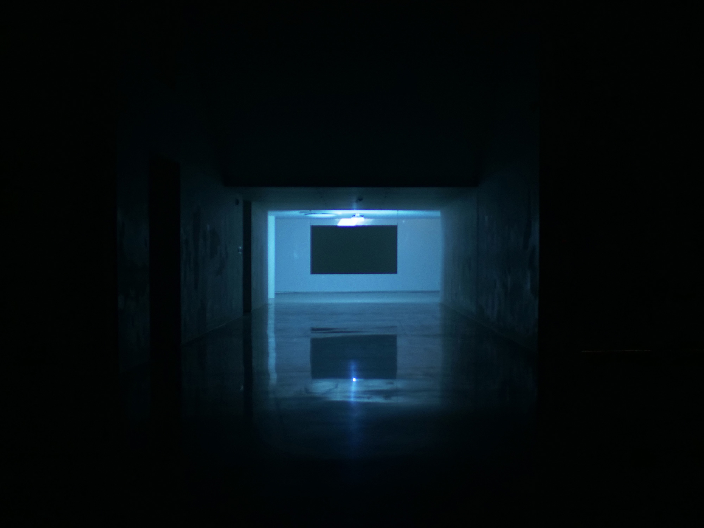
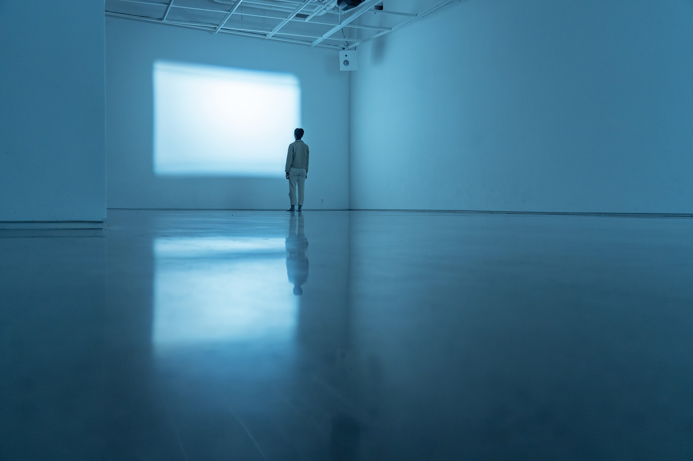
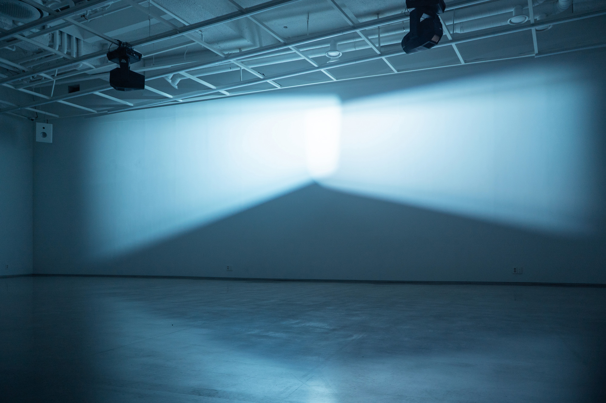
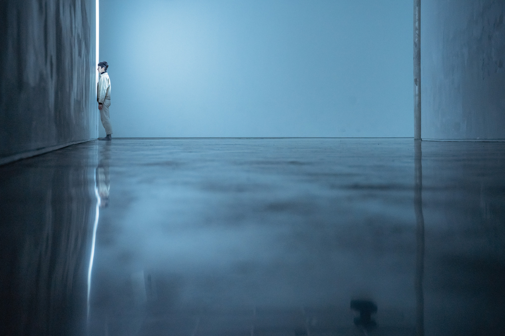
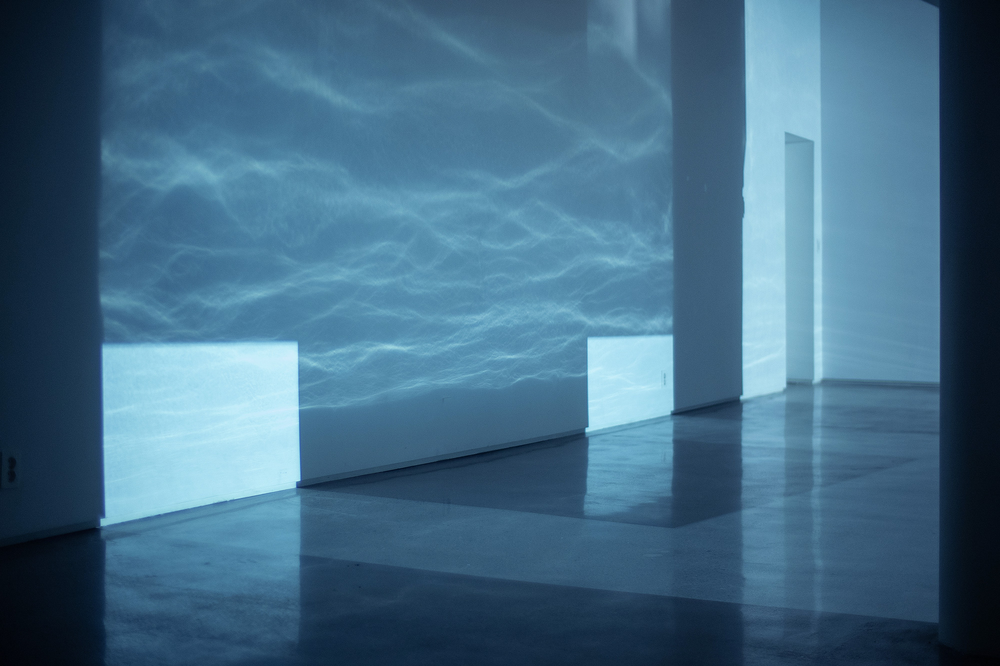
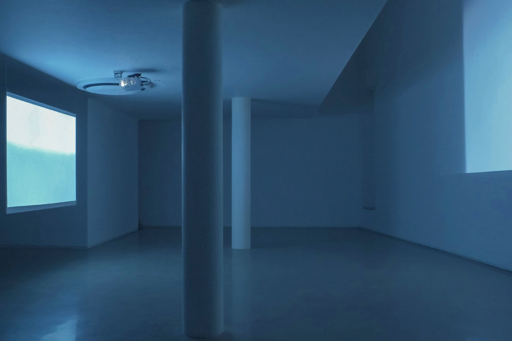
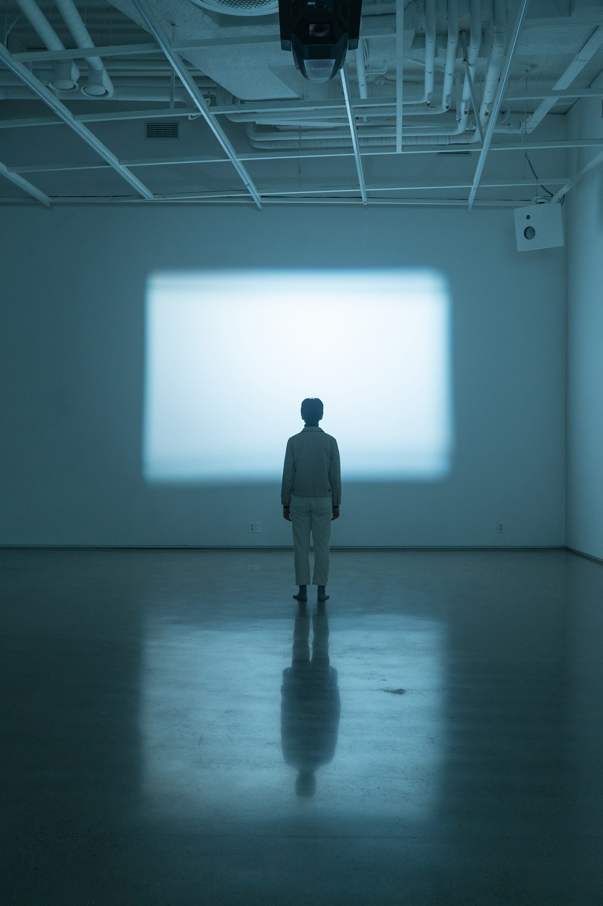
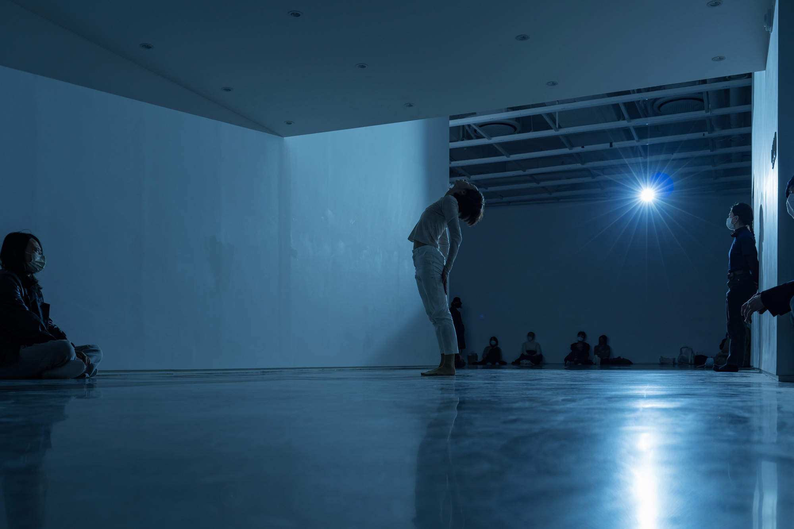
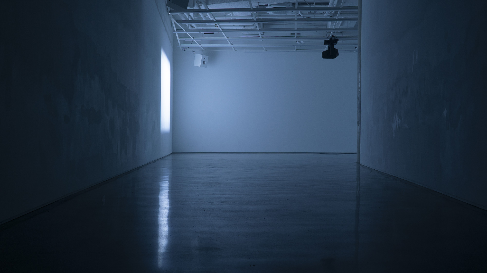
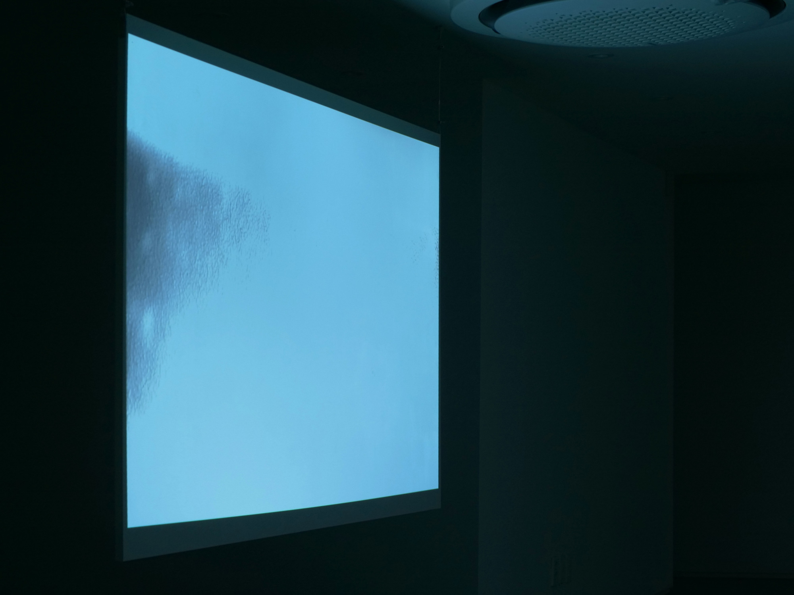

Performance:
CORE
‹코어›
전시
2021.11.7(sun)-12(fri)
13:00-20:00
퍼포먼스
2021.11.6(sat)-11.13(sat)
15:00/17:00
기획·제작: 권희수
퍼포머: 이소영, 손나예, 전보람
그래픽 디자인: 유현선(워크룸 프레스)
글: 곽영빈
공간설치: 샴푸
조명기술: 김영용
영상: 이도현
사진: 이현석
보는 사람: 조경재, 한대호
사운드 자문: 정태평
후원: 서울문화재단
협력: 임은정, 장혜진
‹CORE›
Planning and production: Kwon Hee-soo
Performers: Lee So-young, Son Na-ye, Jeon Bo-ram
Graphic design: Yoo Hyeon-seon (Workroom Press)
Writing: Kwak Yeong-bin
Space installation: Shampoo
Lighting technology: Kim Yeong-yong
Video: Lee Do-hyeon
Photography: Lee Hyeon-seok
Viewers: Kyung-jae Cho, Dae-ho Han
Sound consulting: Jeong Tae-pyeong
Sponsorship: Seoul Foundation for Arts and Culture
Cooperation: Im Eun-jeong, Jang Hye-jin











‹코어›는 파동의 중심으로부터 외부의 빛이 아닌 정신의 빛을 바라보는 에 주목한다. 본 작업은 인간의 의식을 특정한 상태로 이끄는 바이노럴 비트를 통해 몸의 중심점에서 신체와 동기화되는 무형의 형상이 그리는 궤적에 다가가고자 한다. 바깥으로 향한 시선을 몸 내부로 돌렸을 때 알아차릴 수 있는 보이지 않는 기류에 대한 관심에서 출발하는 작업이기도 하다. 보이지 않는 파동이 그리는 궤적은 몸과 시공간을 순환한다. 본 작업은 그러한 비가시적인 형태의 움직임을 통해 이를 빛과 소리 그리고 몸이 공존하는 원환체와 센터링의 감각을 환기시켜 보고자 한다. 나아가 퍼포먼스 ‹코어›를 통해 파동의 무형의 형상을 움직임의 감흥으로 확장시키고자 한다. 파동이 몸을 통해 교차되고 전이될 때 우리는 어떤 상태에 이르게 될까.
‹코어›는 신체와 공명하는 소리 주파수와 그 궤적을 보여주는 빛의 움직임을 통해 무형의 형상과 몸 내부의 중심점을 향해 다가간다. 작업적 관심사가 ‘보는 행위’로부터 비가시적인 교류와 ‘운동성’으로 이행하면서, 눈으로 바라보는 방식에서 벗어나 몸을 통해 자각하는 방식으로, 재현보다는 총체적 사건으로 매개된 시공간적 상태에 주목하게 되었다. 그것은 코로나로 인해 ‘멈춤’의 시간을 갖고 있는 상황 속에서 자연스러운 이행이기도 했다.
소리의 파동, 그 중에서 주파수의 맥놀이 현상으로 좌뇌와 우뇌를 동기화하는 시키는 ‘바이노럴 비트’는 인간의 의식을 특정 상태로 이끈다고 알려져 있다. 그 소리는 몸 한가운데 중심점(코어)에서 만나게 되는데 그 교차점에서 소리와 신체는 동기화된다. (특정 주파수는 기하학적 배열 및 특정패턴 원리에 따라 몸의 특정 부위와 공명하는데 그 핵심 부위는 인체의 코어((회음부, 하단전, 배꼽, 심장, 목, 미간, 정수리))와 연관되어 있다.) 이 코어의 중심점을 따라 몸과 의식의 교차점에서 텅 빈 통로가 형성되는데 그 중심점, 진공의 상태에서 우리의 감각과 의식은 교차되고 흡수된다. ‹코어›라는 제목으로 이루어진 일련의 작업들은 인간이 감각하는 차원을 넘어 그것이 통합되고 확장되는 중심부를 향한다.
윈드밀에서 진행되는 ‹코어›에서는 회전하는 빛과 보이지 않는 소리의 궤적 안에서 관객 스스로의 몸을 통해 또 다른 시공간의 장소로 이행해볼 것을 제안한다. 전시장의 가운데 통로를 중심으로 공간은 빛과 어둠을 순환한다. 공간은 멈춰 있는 동시에 움직이는 몸체로서 관객의 몸과 만난다. 전시장에서 관객은 공간 구조를 따라 걷거나 앉고 때론 안대를 쓰고 누워서 온전히 소리에만 집중할 수 있다.
한편 퍼포먼스 ‹코어›에서는 보이지 않는 토러스의 형상을 몸과 사이의 공간을 통해 가시화한다. 세 명의 퍼포머(이소영, 손나예, 전보람)와 함께하는 본 작품에서는 신체의 특정 부위와 공명하는 소리의 주파수에 따라 몸의 중심점을 이동하며 발생하는 떨림과 사이의 공간에서 발생하는 기류에 주목한다. 또한 ‹스트로보스코프›에서는 소리의 주파수를 빛이 깜빡이는 신호로 치환하여 리듬의 패턴을 가시화한다. 반복적인 운동성이 공간으로 확장되는 동안, 맞은편에서 상영되는 영상작업 ‹리버스›는 필름을 감고-되감는 원형의 움직임이 만나는 균형점에서 발생하는 미세한 요동과 그 잠재된 힘을 다룬다.
소리가 움직임의 근간이 된다면 움직임은 빛의 스코어를 위한 악보로서 연쇄작용을 일으킨다. 텅 빈 장소는 내부로 되돌려진 시선을 반영하는 또 다른 ‘몸체’이기도 하다. 소리와 빛, 그리고 몸은 서로의 주기를 반영하며 순환하는 토러스 형태를 형성한다. 이 형상의 단면은 두 파동이 맥놀이 현상으로 일으키는 구조와 일치한다. 사운드와 몸체 그리고 빛이 그리는 궤적은 매체의 고유성에 따라 각각 다른 감각기관을 통해 전달된다고 느껴지지만 사실 공통적으로 파장의 주파수를 그리고 있다는 점에서 보이지 않는 차원에서 동일한 형태를 유하고 있다.
살아있는 요소는 리듬을 갖는다. 리듬은 공진하는 과정 속에서 자기패턴을 갖는다. 세포는 우주의 행성과 공명하고 식물은 나선형을 그리며 생장한다. 살아있는 생명체는 성장과 소멸의 주기를 반복하면서 시공간적으로 상승과 하강의 토러스 순환체를 그린다. 그것은 보이지 않는 파동-몸체이기도 하다. 특히 몸은 동물적 기관과 식물적 기관으로 나뉘는데 주목하는 것은 텅ㄹ 빈 통로로서 중앙을 관통하는 ‘관’이다. 이 식물성 기관으로부터 소화, 생식 반응과 호흡이 이루어지는데 이 텅 빈 중심부는 바이노럴 비트가 발생하는 교차점과도 일치한다. 이때의 중심은 하나의 중앙점이 아닌, 2개의 서로 다른 파동이 부딪쳐 발생하는 새로운 장소에 가깝다. 그 중앙은 ‘텅 빈 통로’, ‘사이의 시공간’ 혹은 ‘영점장(zero point energy)’이기도 하다. 이 교차점은 소리에 있어서 무의식으로 이행하는 뇌파의 형태로, 빛의 궤도에 있어서는 두 원이 부딪치는 통로로, 몸에 있어서는 호흡과 신경계의 순환으로 나타난다. 퍼포먼스에서는 각 특정 주파수에 따라 몸의 특정 부위로 중심축을 이동해가며 자연스럽게 발생하는 장기와 신경계 그리고 근육의 움직임에 주목한다. 식물은 동물과 달리 감각과 운동 능력이 없지만 세포 단위에서 우주와 공진하는 특성이 있어 성장과 계절의 주기를 반복한다. 이처럼 ‹코어›는 동물적 개체운동이 아닌 식물적 ‘관득성질’을 통해 몸이 간직하고 있는 궤도성에 다가가고자 한다.
‹코어(Core)›, 4채널 스피커, 무빙라이트 2대,
00:50:00(반복재생), 2021.
‹코어›는 소리와 빛에 의한 공간-몸체를 통해 듣고 보고 만지고 느끼는 감각 너머의 무한히 뻗은 ‘먼 곳’이자 몸 내부에 깃든 원형성에 다가가기 위해 몸 안쪽, 소리와 빛 그리고 몸과 의식이 만나는 중심점에 주목한다. 사운드와 무빙라이트의 빛으로 이루어진 작업 ‹코어›는 관객 스스로의 몸을 통해 경험할 수 있는 무형의 장, 열린 공간으로 관객을 초대한다. 시공간의 확장과 수축 안에서 한 개인의 고유성은 보편적인 지점으로 연결될 수 있을까. ‹코어›는 빛과 소리가 회전하며 만들어내는 보이지 않는 장소를 밝힌다.
‹코어(Core)›, 퍼포먼스, 2021.
(퍼포머: 이소영, 손나예, 전보람)
관객 내부로 집중된 시선을 되돌려 몸과 몸을 통해 전달되는 파동의 떨림에 다가간다. 3명의 퍼포머와 함께 하는 본 작업은 몸의 생기 에너지를 통해 전달되는 파장의 연쇄작용이 그리는 상에 주목한다. 몸에는 미세한 전류가 흐르고 보이지 않는 의식의 흐름은 그 통로의 관계망으로 공유된다. 그러한 장면의 부딪침 속에서 뿌리를 공유하는 식물처럼 단일한 객체와 감각을 넘어선 의식의 텅 빈 순간을 마주할 수 있을까.
‹스트로보스코프(Stroboscope)›, 단채널 영상,
FHD, B/W, 00:03:40, 2021.
‹스크로보스코프›는 카메라의 내부로 빛을 되돌려 렌즈 없이 촬영된, 아무것도 재현하지 않고 점멸하는 빛으로만 이루어진 실험영화다. 본 작업은 사운드의 헤르츠(hz)를 점멸하는 빛의 진동 주기로 치환하여 카메라의 셔터 스피드와 스트로보의 깜박임의 두 진동수가 교차하며 일으키는 시지각적 효과에 주목한다. 전시장에 설치된 ‹스트로보스코프›는 긴 터널을 지나 점멸하는 빛이 만들어내는 뒷면의 공간성을 통해 또 다른 스크린의 세계를 만들어낸다.
‹리버스(rivers)›, 단채널 영상, FHD, Color, 00:10:00, 2021.
서로 다른 방향의 두 흐름이 만나는 중심점, 에너지가 부딪치는 영점장은 힘의 상쇄로 인해 멈춰 있는 것처럼 보이지만 내부에는 끊임없는 움직임이 발생하고 있다. 필름의 감기와 되감기 통해 회전하는 두 원의 움직임, 그 마주 보는 사이의 중심축으로부터 서로를 향해 흐르는 강물의 시간이 펼쳐진다.
‹Core› focuses on looking at the light of the mind, not the external light, from the center of the wave. This work attempts to approach the trajectory of an invisible shape that is synchronized with the body from the center point of the body through binaural beats that lead human consciousness to a specific state. This work also starts from an interest in the invisible air currents that can be noticed when the gaze directed outward is turned inside the body. The trajectory of an invisible wave circulates through the body and time and space. This work attempts to evoke the sensation of a torus and centering where light, sound, and the body coexist through the movement of such invisible forms. Furthermore, through the performance ‹Core›, it attempts to expand the invisible shape of the wave into the emotion of movement. What state will we reach when the wave intersects and is transmitted through the body? ‹Core› approaches an invisible shape and the center point inside the body through the movement of light that shows the sound frequency that resonates with the body and its trajectory. As my work interests shifted from the ‘act of seeing’ to invisible exchange and ‘mobility’, I began to focus on the spatiotemporal state mediated by a holistic event rather than a representation, moving away from the way of looking with my eyes to the way of perceiving through my body. It was also a natural transition in a situation where I had a time of ‘stop’ due to Corona.
It is known that the ‘binaural beat’, which synchronizes the left and right brains through the phenomenon of sound waves and frequency pulses, leads human consciousness to a specific state. The sound meets at the central point (core) in the middle of the body, and the sound and the body are synchronized at that intersection. (Specific frequencies resonate with specific parts of the body according to geometric arrangements and specific pattern principles, and the core parts are related to the core of the human body (perineum, lower abdomen, navel, heart, neck, between the eyebrows, crown of the head)). An empty passage is formed at the intersection of the body and consciousness along the central point of this core, and our senses and consciousness intersect and are absorbed at that central point, in a vacuum. A series of works titled ‹Core› goes beyond the dimension of human perception and moves toward the center where it is integrated and expanded.
In ‹Core›, which is performed at the Windmill, the artist proposes that the audience move to another space and time through their own bodies within the trajectory of rotating light and invisible sound. The space circulates light and darkness around the central passage of the exhibition hall. The space meets the audience’s body as a body that is both still and moving. In the exhibition hall, the audience can walk or sit along the spatial structure, or sometimes lie down with a blindfold on, and focus solely on the sound.
Meanwhile, in the performance ‹Core›, the shape of an invisible torus is visualized through the space between the body and the space between. This work, performed with three performers (Lee So-young, Son Na-ye, and Jeon Bo-ram), focuses on the vibration that occurs as the center point of the body moves according to the frequency of the sound that resonates with a specific part of the body, and the air current that occurs in the space between. In addition, in ‹Stroboscopic›, the frequency of sound is replaced with a signal of flashing light to visualize the pattern of rhythm. While the repetitive movement expands into space, the video work ‹Reverse› shown on the opposite side deals with the subtle fluctuations and potential power that occur at the point of balance where the circular movements of winding and rewinding the film meet.
If sound is the basis of movement, movement creates a chain reaction as a score for the light. The empty space is also another ‘body’ that reflects the gaze turned inward. Sound, light, and the body form a torus shape that reflects each other’s cycles and circulates. The cross-section of this shape matches the structure that the two waves create through the phenomenon of pulse. The trajectories drawn by sound, body, and light feel like they are transmitted through different sensory organs depending on the uniqueness of the medium, but in fact, they share the same form in an invisible dimension in that they commonly draw the frequency of the wave.
Living elements have rhythm. Rhythm has a magnetic pattern in the process of resonance. Cells resonate with planets in the universe, and plants grow in spirals. Living organisms repeat the cycle of growth and extinction, drawing a torus of rising and falling in space and time. It is also an invisible wave-body. In particular, the body is divided into animal and plant organs, and what is noteworthy is the ‘tube’ that penetrates the center as an empty passage. Digestion, reproductive reactions, and breathing occur from this plant organ, and this empty center also coincides with the intersection where binaural beats occur. The center at this time is not a single central point, but rather a new place where two different waves collide and occur. The center is also an ‘empty passage,’ ‘space-time in between,’ or ‘zero point energy.’ This intersection appears in the form of brain waves that unconsciously transition in sound, in the orbit of light as a passage where two circles collide, and in the body as breathing and the circulation of the nervous system. In the performance, the center axis moves to a specific part of the body according to each specific frequency, and attention is paid to the movements of organs, nervous system, and muscles that occur naturally. Unlike animals, plants do not have the ability to sense or move, but they have the characteristic of resonating with the universe at the cellular level, repeating the cycle of growth and seasons. In this way, ‹Core› attempts to approach the orbital nature that the body possesses through the ‘obtainable nature’ of plants rather than animalistic individual movement.
‹Core›, 4-channel speaker, 2 moving lights,
00:50:00 (repeat play), 2021.
‹Core› focuses on the inside of the body, the central point where sound and light, and the body and consciousness meet, in order to approach the infinitely extended ‘distant place’ beyond the senses of hearing, seeing, touching, and feeling through the body through space and light. ‹Core›, a work made of sound and moving light, invites the audience to an intangible field, an open space that can be experienced through their own bodies. Can the uniqueness of an individual be connected to a universal point within the expansion and contraction of space and time? ‹Core› illuminates the invisible space created by the rotation of light and sound.
‹Core›, Performance, 2021.
(Performers: Lee So-young, Son Na-ye, Jeon Bo-ram)
It returns the gaze focused on the audience to the body and the trembling of waves transmitted through the body. This work with three performers focuses on the image drawn by the chain reaction of waves transmitted through the body’s vital energy. A microscopic current flows through the body, and the invisible flow of consciousness is shared through the network of relationships in the passage. Can we encounter a single object and an empty moment of consciousness that goes beyond senses like a plant sharing roots in the collision of such scenes?
‹Stroboscope›, Single-channel video,
FHD, B/W, 00:03:40, 2021.
‹Stroboscope› is an experimental film that returns light to the inside of the camera, shot without a lens, and consists only of flashing light without reproducing anything. This work replaces the hertz (Hz) of sound with the vibration cycle of flashing light, and focuses on the visual-perceptual effect caused by the intersection of the two frequencies of the camera shutter speed and the flashing of the strobe. The ‹Stroboscope› installed in the exhibition hall creates another world of screens through the spatiality of the back created by the flashing light passing through a long tunnel.
‹Rivers›, single-channel video, FHD, Color, 00:10:00, 2021.
The center point where two flows in different directions meet, the zero point where energy collides, appears to be stopped due to the offset of force, but there is constant movement occurring inside. The movement of two circles rotating through the winding and rewinding of the film, and the time of the river flowing toward each other from the central axis between them unfold.